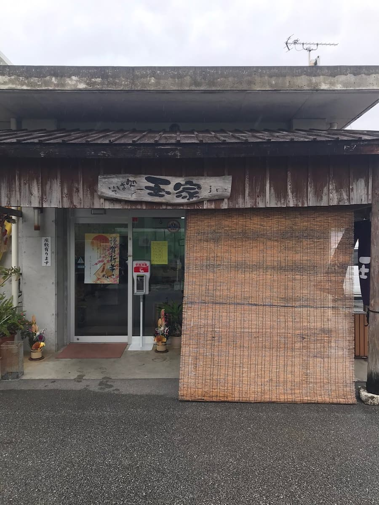
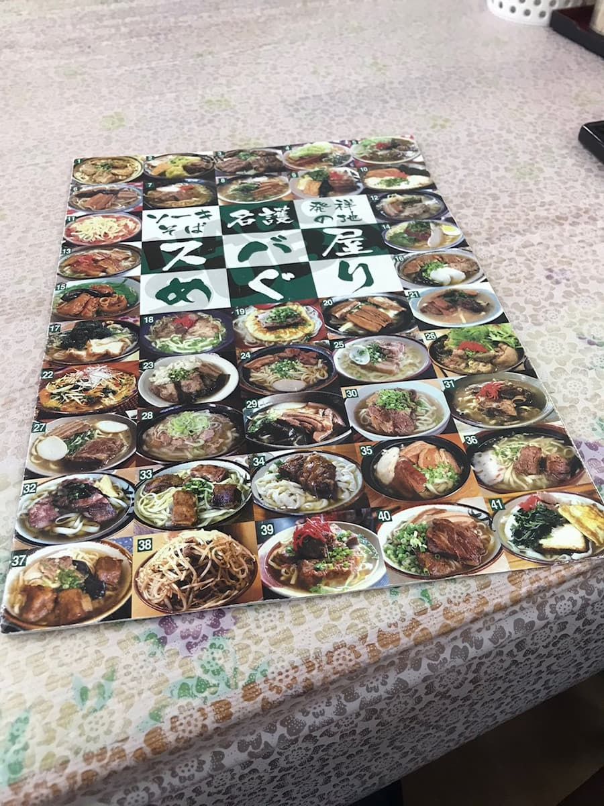
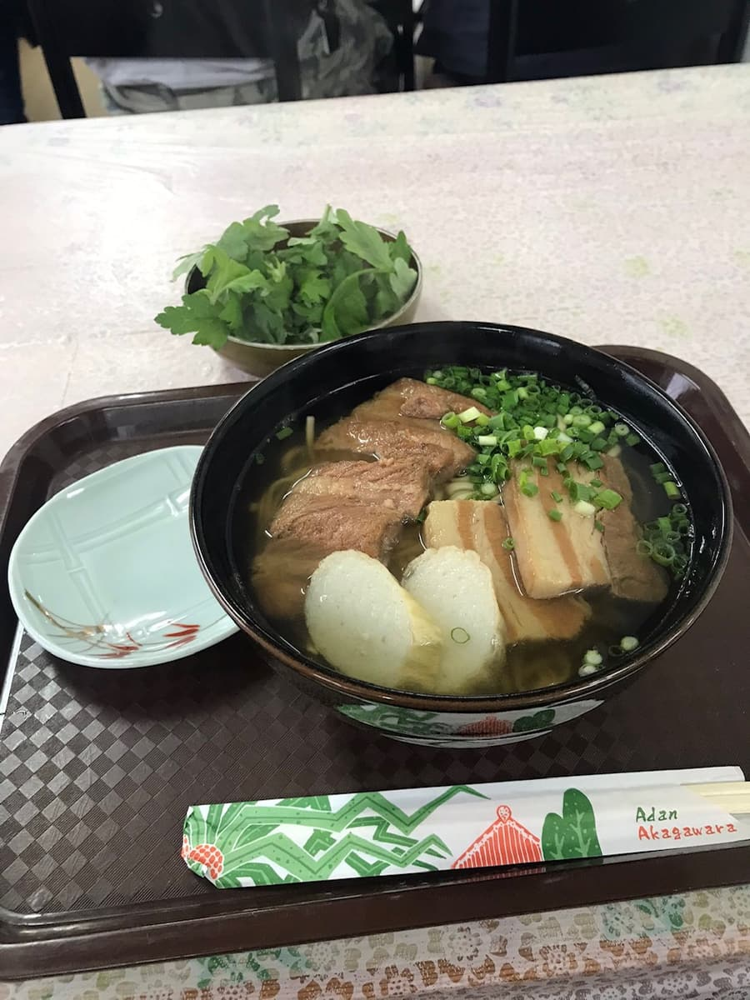

It was introduced in the "Nago City Soba Map," so I ate here in January 2021😄


I ordered the "mixed soba" introduced on the map. According to the map, it's the "Second-Generation Okinawa Soba King" and its selling point seems to be fuchiba (mugwort).

A light, clear soup, and you can choose flat or thin noodles; this time I went with the thin noodles, which are the popular choice😄 The pork spare ribs (soki) and braised pork belly (sanmai-niku) toppings are simmered tender too😋 Just what you'd expect from the 2nd-generation Okinawa Soba King lol The all-you-can-take fuchiba (mugwort) is also a great accent and the best. I feel like it instantly makes it zero calories and healthy😁
Rating (9/15): As the "Second-Generation Okinawa Soba King," it's a shop you'll want to check out😁 It's perfectly tasty, so please do give it a try.
Noodles: ★★★☆☆（3）
Soup: ★★★☆☆（3）
Toppings: ★★★☆☆（3）